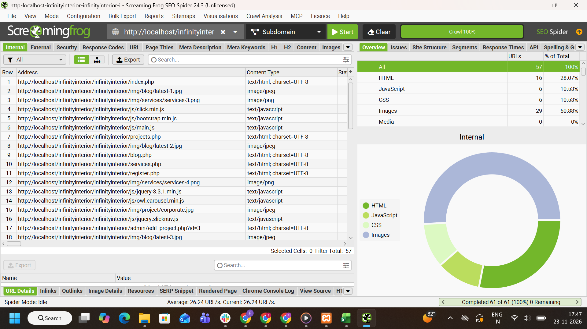
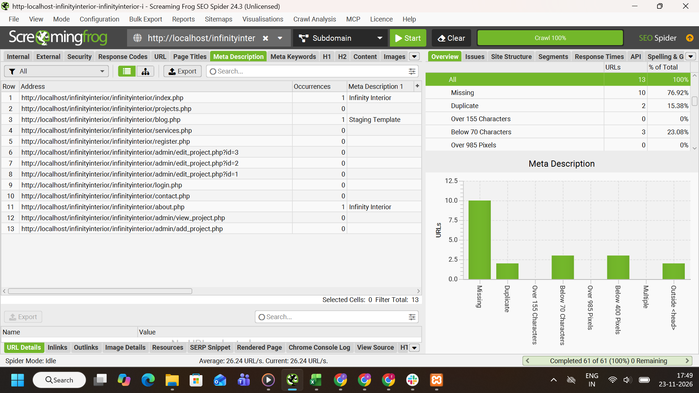
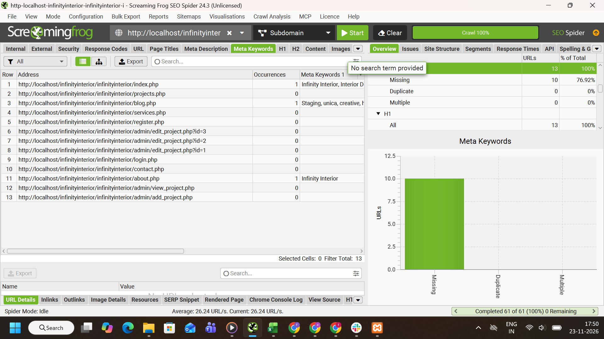
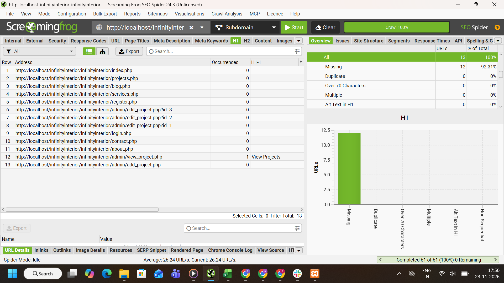
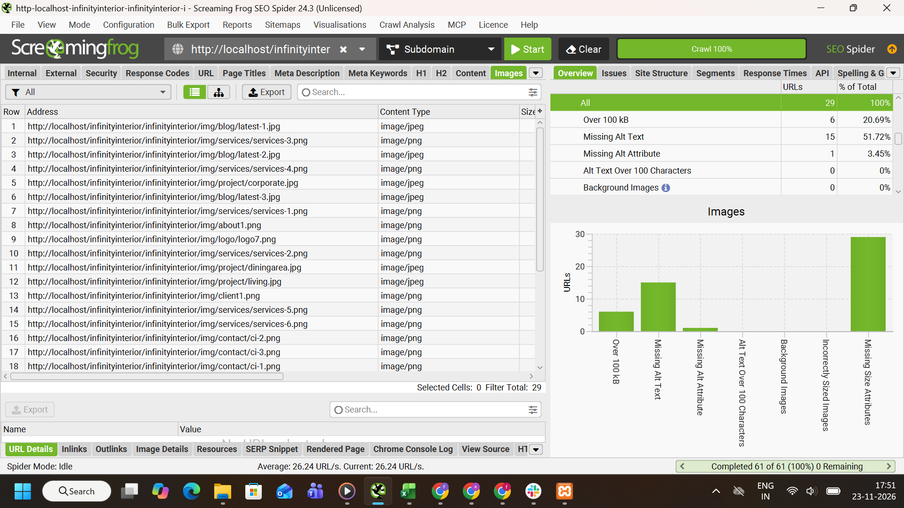
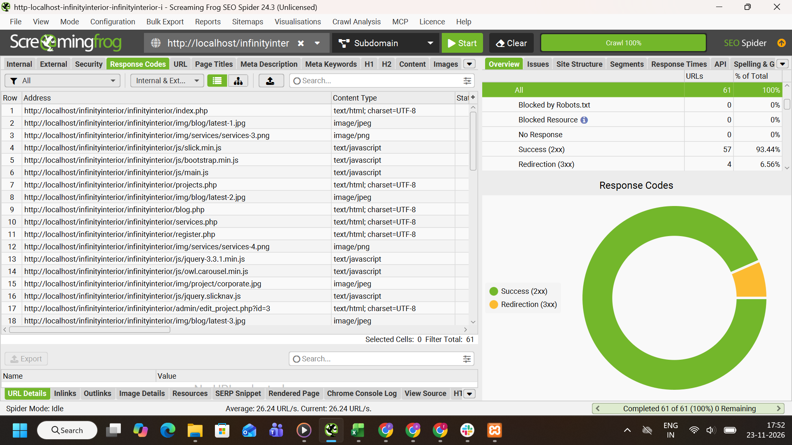
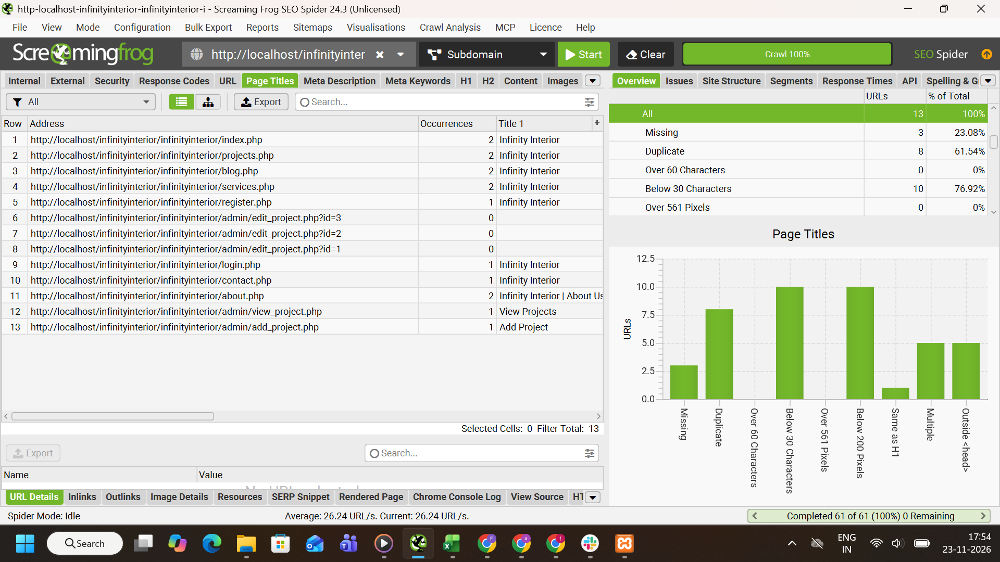

A practical SEO audit project focused on analyzing website structure, identifying technical SEO issues and evaluating on-page optimization.
SEO Project Practical WorkI performed a website SEO audit using Screaming Frog SEO Spider. The purpose was to analyze website pages, review SEO elements and identify areas that need improvement.
Scanned website URLs using Screaming Frog.
Exported crawl data into Microsoft Excel.
Reviewed technical and on-page SEO elements.
Identified SEO issues and improvement areas.







Note: Final findings should be updated according to the actual Screaming Frog audit results.
Download the report containing the SEO audit data and analysis.
↓ View SEO Audit Report